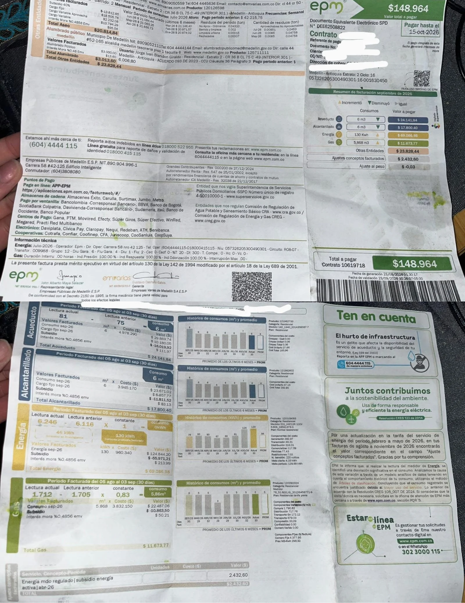

Factura e Historial de Consumo

| Mes | Consumo (kWh) | Valor Pagado (COP) |
|---|---|---|
| Septiembre 2025 | 79 | $41.984 |
| Marzo 2026 | 83 | $44.110 |
| Mayo 2026 | 87 | $46.235 |
| Julio 2026 | 81 | $43.047 |
| Agosto 2026 | 124 | $65.899 |
| Septiembre 2026 (Actual) | 130 | $69.087 |
Comparación: Proyección vs Factura Real
Al calcular el consumo semanal en equipos.html para los 4 aparatos principales (congelador, dos televisores y proyector), obtuvimos 21,02 kWh a la semana, lo cual proyecta un consumo mensual aproximado de 90 kWh ($47.830 COP).
Sin embargo, en la factura real de septiembre de EPM se registró un consumo total de 130 kWh ($69.087 COP)[cite: 2].
Explicación de la diferencia (40 kWh de diferencia): Esta variación se debe a consumos secundarios del hogar que no formaron parte del inventario inicial, como el sistema de iluminación (bombillos), la lavadora, pequeños electrodomésticos de cocina, cargadores de celular y el consumo en modo de espera (vampiro) de los equipos cuando permanecen enchufados.
Recomendaciones de Ahorro para la Familia Plan 2026
Con base en los datos analizados y la diferencia detectada en la factura de EPM, sugerimos las siguientes medidas:
- Prioridad Alta Optimizar el uso del congelador Challenger: Verificar que los empaques de la puerta sellen herméticamente para evitar que el motor trabaje de más.
- Consumo Fantasma Desconectar equipos sin uso: Desenchufar televisores y el proyector mediante una multitoma con interruptor para eliminar el gasto de energía en modo de espera.
- Hábitos Control de iluminación: Aprovechar la luz natural durante el día y asegurarse de apagar los bombillos al salir de las habitaciones.